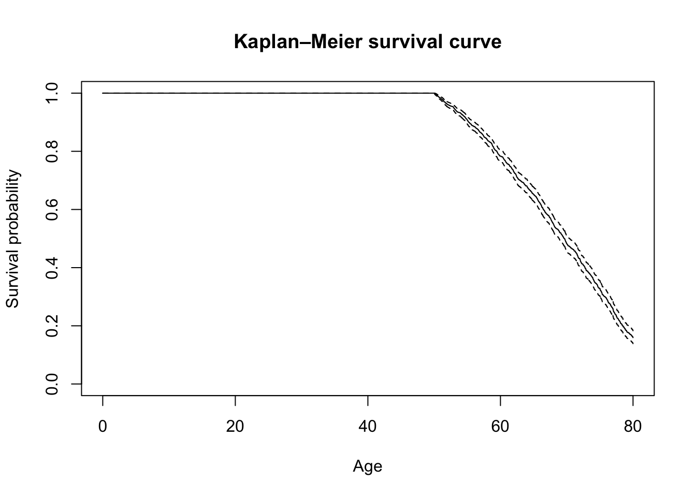
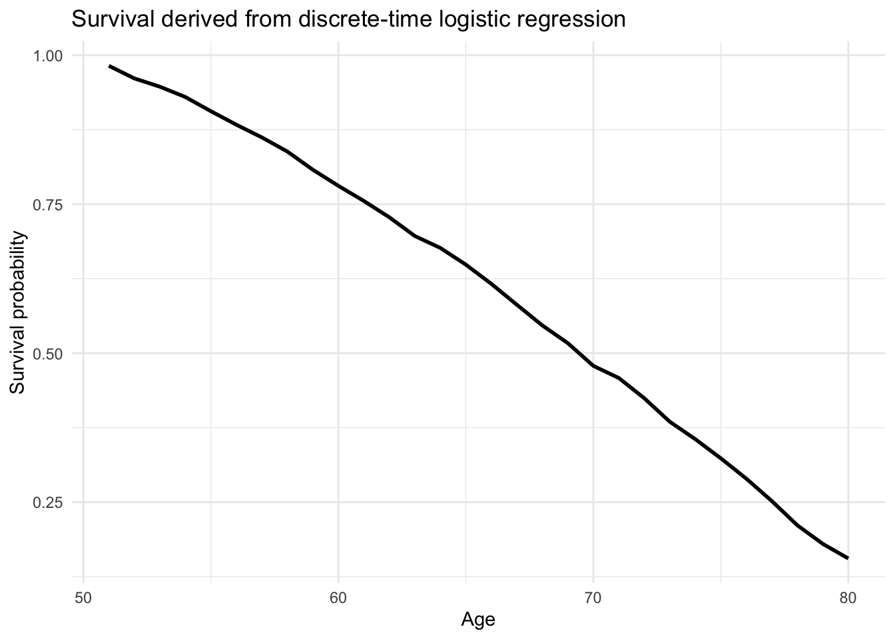
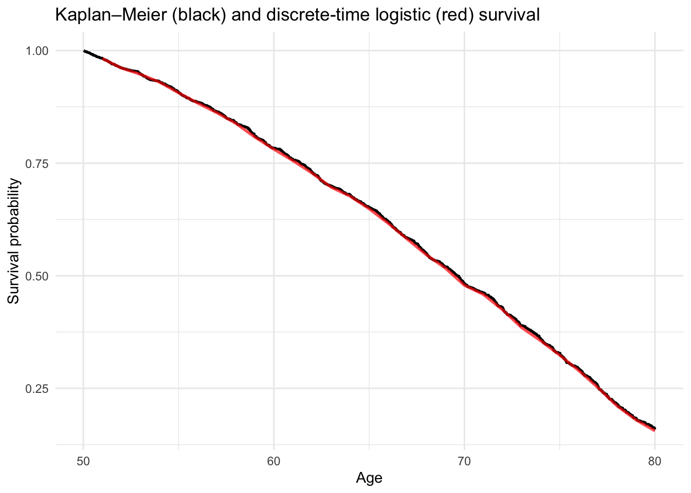
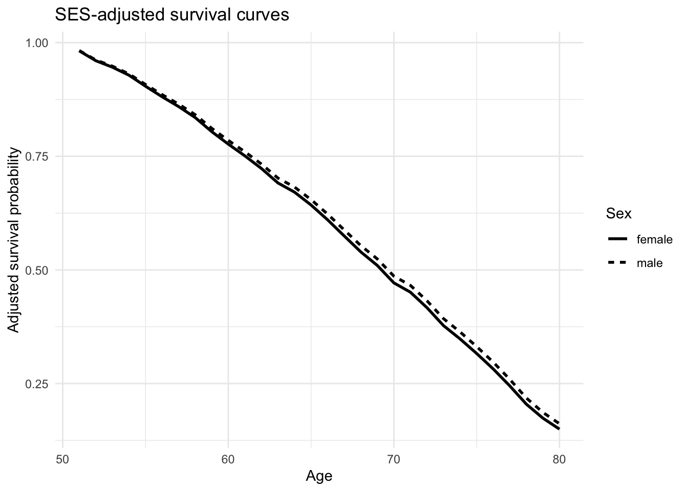
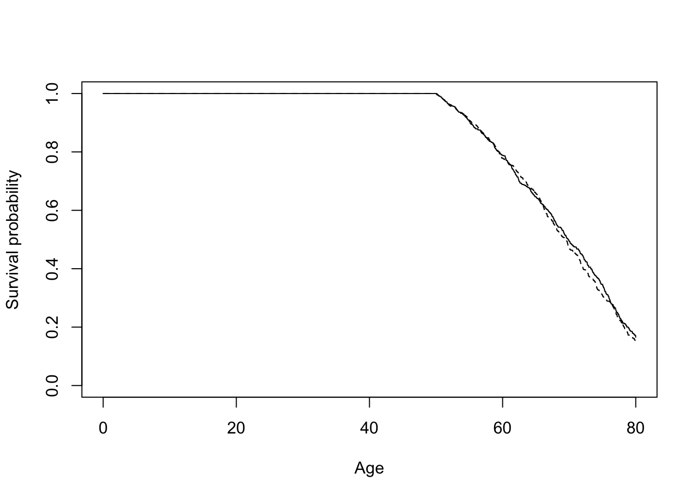

install.packages(c(
"eha",
"survival",
"dplyr",
"tidyr",
"ggplot2",
"marginaleffects"
))Event History Analysis in R
Kaplan–Meier and Discrete-Time Logistic Regression
statistics
demography
R
Learn how to run a basic survival/event-history analysis in R using Kaplan-Meier and logistic regression.
Introduction
This tutorial introduces the basics of event history analysis (EHA)/survival analysis using the scania dataset from the eha package to study mortality after age 50.
The main idea is to approach the same survival process in two ways. We first estimate survival non-parametrically using Kaplan–Meier (i.e., we do not impose a functional form on the survival process and just examine what the raw data shows). We then restructure the data into person-period format and estimate the age-specific hazard using logistic regression. From those predicted hazards we reconstruct a survival curve and compare it directly with Kaplan–Meier.
After establishing this connection do we add explanatory variables and calculate adjusted survival curves.
Setup
Install the packages if necessary:
Load the packages:
library(eha)
library(survival)Warning: package 'survival' was built under R version 4.4.3library(dplyr)Warning: package 'dplyr' was built under R version 4.4.3
Attaching package: 'dplyr'The following objects are masked from 'package:stats':
filter, lagThe following objects are masked from 'package:base':
intersect, setdiff, setequal, unionlibrary(tidyr)Warning: package 'tidyr' was built under R version 4.4.3library(ggplot2)Warning: package 'ggplot2' was built under R version 4.4.3library(marginaleffects)Warning: package 'marginaleffects' was built under R version 4.4.3Load the Scania data:
data(scania)
head(scania) id enter exit event birthdate sex parish ses immigrant
29 1 50 59.242 1 1781.454 male 1 lower no
66 2 50 53.539 0 1821.350 male 1 lower yes
70 3 50 62.155 1 1788.936 male 1 lower yes
83 4 50 65.142 1 1796.219 female 1 lower yes
100 5 50 51.280 0 1822.713 male 1 lower yes
132 6 50 70.776 1 1813.547 female 1 lower yessummary(scania) id enter exit event birthdate
Min. : 1.0 Min. :50 Min. :50.00 Min. :0.0000 Min. :1763
1st Qu.: 483.5 1st Qu.:50 1st Qu.:55.37 1st Qu.:0.0000 1st Qu.:1786
Median : 966.0 Median :50 Median :62.70 Median :1.0000 Median :1808
Mean : 966.0 Mean :50 Mean :63.97 Mean :0.5624 Mean :1806
3rd Qu.:1448.5 3rd Qu.:50 3rd Qu.:72.05 3rd Qu.:1.0000 3rd Qu.:1825
Max. :1931.0 Max. :50 Max. :80.00 Max. :1.0000 Max. :1845
sex parish ses immigrant
male :975 1: 159 upper: 375 no : 759
female:956 2: 181 lower:1556 yes:1172
3: 180
4: 258
5:1153
The most important variables include:
id: person identifierenter: age at which observation beginsexit: age at death or censoringevent: whether death occurred atexitsex: sexses: socioeconomic status
In these data, observation starts at age 50.
Suppose a person has:
enter = 50
exit = 59.24
event = 1This means that the person is observed from age 50 and dies at age 59.24.
If instead:
enter = 50
exit = 80
event = 0the person is observed until age 80 but does not die while under observation. The observation is right-censored.
Survival and the hazard
Two quantities are central to event history analysis.
The survival function
\[ S(t)=P(T>t) \]
gives the probability of remaining event-free beyond time \(t\).
In our example:
What is the probability that somebody who has reached age 50 survives beyond age 50?
The hazard asks a different question. In discrete time:
\[ h_j = P(\text{death in interval }j \mid \text{alive at the beginning of interval }j). \]
For example:
Among people who are alive at age 70, what is the probability that they die between ages 70 and 71?
The two quantities are directly connected.
If the hazards in successive intervals are
\[ h_1,h_2,\ldots,h_j, \]
then survival through interval \(j\) is
\[ S_j = \prod_{k=1}^{j}(1-h_k). \]
This relationship will become important when we estimate the hazard with logistic regression.
Kaplan–Meier survival
We begin with the Kaplan–Meier estimator.
Create a survival object:
surv <- Surv(
time = scania$enter,
time2 = scania$exit,
event = scania$event
)Because we specify both entry and exit time, this takes the form
Surv(enter, exit, event)and describes the period during which each person is at risk.
Estimate overall survival:
km <- survfit(
surv ~ 1,
data = scania
)
kmCall: survfit(formula = surv ~ 1, data = scania)
n events median 0.95LCL 0.95UCL
[1,] 1931 1086 69.6 68.9 70.4Plot the survival curve:
plot(
km,
xlab = "Age",
ylab = "Survival probability",
main = "Kaplan–Meier survival curve"
)
The curve starts at 1 at age 50 and declines as deaths occur.
We can request survival probabilities at selected ages:
summary(
km,
times = c(60, 70, 80)
)Call: survfit(formula = surv ~ 1, data = scania)
time n.risk n.event survival std.err lower 95% CI upper 95% CI
60 1129 352 0.783 0.0103 0.763 0.804
70 578 395 0.483 0.0136 0.457 0.510
80 146 339 0.159 0.0113 0.139 0.183For example, the survival probability at age 70 answers:
Among people who survived to age 50, what proportion are estimated to survive to at least age 70?
Kaplan–Meier estimates this directly from the observed survival times. We have not yet specified a regression model.
Person-Period files
To estimate a discrete-time event history model, we restructure the data.
The original data have one row per person.
For discrete-time analysis we instead want one row for every time interval during which a person is at risk.
We will use one-year age intervals.
Someone who dies at age 55.4 will therefore contribute observations approximately like:
id age death
1 50 0
1 51 0
1 52 0
1 53 0
1 54 0
1 55 1The variable death now indicates whether the event occurs during that particular interval.
Thus:
death = 0means that the person survives the interval.death = 1means that the person dies during the interval.
Create the person-period data:
scania_pp <- scania |>
mutate(
event = as.integer(event),
n_intervals = if_else(
event == 1,
ceiling(exit) - 50,
floor(exit) - 50
)
) |>
filter(n_intervals > 0) |>
uncount(
n_intervals,
.id = "period",
.remove = FALSE
) |>
mutate(
age = 49 + period,
death = as.integer(
event == 1 &
period == n_intervals
)
)Inspect the resulting file:
scania_pp |>
select(id, age, death, sex, ses) |>
head(20) id age death sex ses
1 1 50 0 male lower
2 1 51 0 male lower
3 1 52 0 male lower
4 1 53 0 male lower
5 1 54 0 male lower
6 1 55 0 male lower
7 1 56 0 male lower
8 1 57 0 male lower
9 1 58 0 male lower
10 1 59 1 male lower
11 2 50 0 male lower
12 2 51 0 male lower
13 2 52 0 male lower
14 3 50 0 male lower
15 3 51 0 male lower
16 3 52 0 male lower
17 3 53 0 male lower
18 3 54 0 male lower
19 3 55 0 male lower
20 3 56 0 male lowerWe can also inspect one person who dies:
example_id <- scania_pp |>
filter(death == 1) |>
slice(1) |>
pull(id)
scania_pp |>
filter(id == example_id) |>
select(id, age, death) id age death
1 1 50 0
2 1 51 0
3 1 52 0
4 1 53 0
5 1 54 0
6 1 55 0
7 1 56 0
8 1 57 0
9 1 58 0
10 1 59 1There are multiple observations for this person but only one event, in the final interval.
Discrete-time EHA using logistic regression
We now estimate the same mortality process using logistic regression.
Because each row represents one interval during which a person is at risk, our dependent variable is
\[ P(death_{it}=1). \]
More precisely, the model estimates
\[ P( \text{death during interval }t \mid \text{alive at the start of interval }t ). \]
This is the discrete-time hazard.
First model: the baseline hazard only
Before adding explanatory variables such as sex or socioeconomic status, we estimate a model containing only age.
For the first model, it is useful to treat age as categorical:
m0 <- glm(
death ~ factor(age),
data = scania_pp,
family = binomial(link = "logit")
)
summary(m0)
Call:
glm(formula = death ~ factor(age), family = binomial(link = "logit"),
data = scania_pp)
Coefficients:
Estimate Std. Error z value Pr(>|z|)
(Intercept) -4.01173 0.17562 -22.843 < 2e-16 ***
factor(age)51 0.19634 0.24028 0.817 0.413875
factor(age)52 -0.20900 0.27034 -0.773 0.439455
factor(age)53 0.02659 0.25682 0.104 0.917552
factor(age)54 0.37212 0.23908 1.557 0.119588
factor(age)55 0.34960 0.24358 1.435 0.151228
factor(age)56 0.31006 0.24878 1.246 0.212660
factor(age)57 0.44690 0.24374 1.834 0.066719 .
factor(age)58 0.73585 0.23217 3.169 0.001528 **
factor(age)59 0.64621 0.23952 2.698 0.006977 **
factor(age)60 0.61984 0.24404 2.540 0.011088 *
factor(age)61 0.73260 0.24114 3.038 0.002381 **
factor(age)62 0.91227 0.23483 3.885 0.000102 ***
factor(age)63 0.49083 0.26263 1.869 0.061637 .
factor(age)64 0.86804 0.24297 3.573 0.000353 ***
factor(age)65 1.06229 0.23643 4.493 7.02e-06 ***
factor(age)66 1.20233 0.23325 5.155 2.54e-07 ***
factor(age)67 1.25633 0.23455 5.356 8.50e-08 ***
factor(age)68 1.15495 0.24377 4.738 2.16e-06 ***
factor(age)69 1.48080 0.23305 6.354 2.10e-10 ***
factor(age)70 0.90007 0.27270 3.301 0.000965 ***
factor(age)71 1.48703 0.24195 6.146 7.94e-10 ***
factor(age)72 1.73214 0.23642 7.326 2.36e-13 ***
factor(age)73 1.51389 0.25429 5.953 2.63e-09 ***
factor(age)74 1.70036 0.25134 6.765 1.33e-11 ***
factor(age)75 1.87335 0.25056 7.477 7.63e-14 ***
factor(age)76 2.10805 0.24714 8.530 < 2e-16 ***
factor(age)77 2.36307 0.24627 9.595 < 2e-16 ***
factor(age)78 2.25964 0.26449 8.543 < 2e-16 ***
factor(age)79 2.16362 0.28490 7.594 3.10e-14 ***
---
Signif. codes: 0 '***' 0.001 '**' 0.01 '*' 0.05 '.' 0.1 ' ' 1
(Dispersion parameter for binomial family taken to be 1)
Null deviance: 9121.7 on 27177 degrees of freedom
Residual deviance: 8685.2 on 27148 degrees of freedom
AIC: 8745.2
Number of Fisher Scoring iterations: 6Why use factor(age)?
Because we do not yet want to impose a particular shape on the baseline hazard.
Instead, the model estimates a separate mortality probability for each age interval.
Conceptually, this model is estimating
\[ h_{50}, h_{51}, h_{52}, \ldots \]
where, for example, \(h_{70}\) is the probability of dying between approximately age 70 and 71 among people who are alive at age 70.
Predicted hazards using marginaleffects
The coefficients from a logistic regression are expressed as log odds.
Those are usually not the most useful quantities for interpretation.
We can instead use marginaleffects to obtain predicted probabilities.
hazard0 <- predictions(
m0,
newdata = datagrid(
age = sort(unique(scania_pp$age))
),
type = "response"
)
hazard0
age Estimate Std. Error z Pr(>|z|) S 2.5 % 97.5 %
50 0.0178 0.00307 5.80 <0.001 27.1 0.01177 0.0238
51 0.0216 0.00346 6.23 <0.001 31.0 0.01478 0.0283
52 0.0145 0.00293 4.94 <0.001 20.3 0.00873 0.0202
53 0.0183 0.00336 5.44 <0.001 24.1 0.01167 0.0248
54 0.0256 0.00404 6.33 <0.001 31.9 0.01766 0.0335
55 0.0250 0.00412 6.08 <0.001 29.6 0.01696 0.0331
56 0.0241 0.00414 5.82 <0.001 27.3 0.01597 0.0322
57 0.0275 0.00452 6.08 <0.001 29.7 0.01866 0.0364
58 0.0364 0.00533 6.83 <0.001 36.8 0.02597 0.0468
59 0.0334 0.00526 6.35 <0.001 32.1 0.02309 0.0437
60 0.0325 0.00534 6.10 <0.001 29.8 0.02209 0.0430
61 0.0363 0.00578 6.28 <0.001 31.5 0.02497 0.0476
62 0.0431 0.00643 6.70 <0.001 35.5 0.03052 0.0557
63 0.0287 0.00545 5.27 <0.001 22.8 0.01805 0.0394
64 0.0413 0.00665 6.21 <0.001 30.8 0.02830 0.0544
65 0.0498 0.00749 6.65 <0.001 35.0 0.03509 0.0644
66 0.0568 0.00823 6.91 <0.001 37.6 0.04070 0.0729
67 0.0598 0.00874 6.84 <0.001 36.9 0.04265 0.0769
68 0.0543 0.00869 6.26 <0.001 31.2 0.03731 0.0714
69 0.0737 0.01046 7.05 <0.001 39.0 0.05322 0.0942
70 0.0426 0.00851 5.01 <0.001 20.8 0.02594 0.0593
71 0.0741 0.01142 6.49 <0.001 33.4 0.05175 0.0965
72 0.0928 0.01333 6.96 <0.001 38.1 0.06670 0.1190
73 0.0760 0.01292 5.88 <0.001 27.9 0.05069 0.1013
74 0.0902 0.01475 6.11 <0.001 29.9 0.06127 0.1191
75 0.1054 0.01685 6.25 <0.001 31.2 0.07239 0.1385
76 0.1297 0.01963 6.61 <0.001 34.6 0.09122 0.1682
77 0.1613 0.02336 6.91 <0.001 37.5 0.11551 0.2071
78 0.1478 0.02491 5.93 <0.001 28.3 0.09896 0.1966
79 0.1361 0.02638 5.16 <0.001 21.9 0.08440 0.1878
Type: responseThe variable estimate now contains the estimated probability of dying during each age interval.
hazard0 |>
as.data.frame() |>
select(age, estimate) age estimate
1 50 0.01778017
2 51 0.02155417
3 52 0.01447528
4 53 0.01825047
5 54 0.02559055
6 55 0.02503477
7 56 0.02408759
8 57 0.02752294
9 58 0.03640777
10 59 0.03339041
11 60 0.03254973
12 61 0.03629417
13 62 0.04312939
14 63 0.02872340
15 64 0.04134078
16 65 0.04976303
17 66 0.05681818
18 67 0.05978261
19 68 0.05433186
20 69 0.07371795
21 70 0.04262877
22 71 0.07414449
23 72 0.09282700
24 73 0.07600950
25 74 0.09018568
26 75 0.10542169
27 76 0.12969283
28 77 0.16129032
29 78 0.14778325
30 79 0.13609467An estimate such as
age = 59
estimate = 0.033would mean:
Among people who have survived to age 59, approximately 3.33% are predicted to die during the following age interval.
This is a hazard probability, not a survival probability.
From predicted hazards back to survival
We can now convert the predicted hazards into a survival curve.
Recall:
\[ S_j = \prod_{k=1}^{j}(1-h_k). \]
Using R, this cumulative product is calculated with cumprod().
surv0 <- hazard0 |>
as.data.frame() |>
mutate(age = as.numeric(levels(age))) |>
arrange(age) |>
mutate(
survival = cumprod(1 - estimate),
age_end = age + 1
)Inspect the result:
surv0 |>
select(
age,
estimate,
age_end,
survival
) age estimate age_end survival
1 50 0.01778017 51 0.9822198
2 51 0.02155417 52 0.9610489
3 52 0.01447528 53 0.9471374
4 53 0.01825047 54 0.9298517
5 54 0.02559055 55 0.9060563
6 55 0.02503477 56 0.8833734
7 56 0.02408759 57 0.8620951
8 57 0.02752294 58 0.8383677
9 58 0.03640777 59 0.8078446
10 59 0.03339041 60 0.7808703
11 60 0.03254973 61 0.7554532
12 61 0.03629417 62 0.7280347
13 62 0.04312939 63 0.6966350
14 63 0.02872340 64 0.6766252
15 64 0.04134078 65 0.6486530
16 65 0.04976303 66 0.6163741
17 66 0.05681818 67 0.5813528
18 67 0.05978261 68 0.5465980
19 68 0.05433186 69 0.5169003
20 69 0.07371795 70 0.4787955
21 70 0.04262877 71 0.4583850
22 71 0.07414449 72 0.4243983
23 72 0.09282700 73 0.3850027
24 73 0.07600950 74 0.3557388
25 74 0.09018568 75 0.3236563
26 75 0.10542169 76 0.2895359
27 76 0.12969283 77 0.2519852
28 77 0.16129032 78 0.2113424
29 78 0.14778325 79 0.1801095
30 79 0.13609467 80 0.1555976For every interval:
estimateis the probability of dying during the interval.survivalis the probability of surviving all intervals up to its end.
Plot the model-based survival curve:
ggplot(
surv0,
aes(
x = age_end,
y = survival
)
) +
geom_line(linewidth = 1) +
labs(
x = "Age",
y = "Survival probability",
title = "Survival derived from discrete-time logistic regression"
) +
theme_minimal()
Comparing logistic regression with Kaplan–Meier
We can now compare the two approaches.
First extract the Kaplan–Meier estimates:
km_summary <- summary(km)
km_df <- data.frame(
age = km_summary$time,
survival = km_summary$surv
)Then plot the Kaplan–Meier curve together with the survival curve reconstructed from the discrete-time logistic regression:
ggplot() +
geom_step(
data = km_df,
aes(
x = age,
y = survival
),
linewidth = 0.9
) +
geom_line(
data = surv0,
aes(
x = age_end,
y = survival
),
linewidth = 1,
color = 'red',
alpha = 0.7
) +
labs(
x = "Age",
y = "Survival probability",
title = "Kaplan–Meier (black) and discrete-time logistic (red) survival"
) +
theme_minimal()
The curves essentially the same survival process, which illustrates an important point:
Kaplan–Meier and discrete-time logistic regression are not estimating completely different phenomena.
Both describe the same underlying process.
Kaplan–Meier estimates survival directly. The logistic regression estimates the interval-specific hazard, after which we reconstruct survival by accumulating those hazards:
\[ \hat h_t \quad\longrightarrow\quad \prod_{k \leq t}(1-\hat h_k) \quad\longrightarrow\quad \hat S(t). \]
We can also compare the Kaplan-Meier survival estimates at ages 60, 70 and 80 directly to those from the logistic regression.
summary(
km,
times = c(60, 70, 80)
)Call: survfit(formula = surv ~ 1, data = scania)
time n.risk n.event survival std.err lower 95% CI upper 95% CI
60 1129 352 0.783 0.0103 0.763 0.804
70 578 395 0.483 0.0136 0.457 0.510
80 146 339 0.159 0.0113 0.139 0.183surv0 |>
filter(age_end %in% c(60, 70, 80)) |>
select(age_end, survival) age_end survival
1 60 0.7808703
2 70 0.4787955
3 80 0.1555976As we see, the estimates are basically identical.
So why use regression at all?
Because regression allows us to introduce explanatory variables.
Adding covariates
We now extend the model by adding sex and socioeconomic status.
m1 <- glm(
death ~ factor(age) + sex + ses,
data = scania_pp,
family = binomial(link = "logit")
)
summary(m1)
Call:
glm(formula = death ~ factor(age) + sex + ses, family = binomial(link = "logit"),
data = scania_pp)
Coefficients:
Estimate Std. Error z value Pr(>|z|)
(Intercept) -4.01420 0.18806 -21.345 < 2e-16 ***
factor(age)51 0.19612 0.24029 0.816 0.414388
factor(age)52 -0.20922 0.27034 -0.774 0.438980
factor(age)53 0.02659 0.25683 0.104 0.917529
factor(age)54 0.37214 0.23908 1.557 0.119571
factor(age)55 0.34943 0.24359 1.435 0.151423
factor(age)56 0.30984 0.24879 1.245 0.212985
factor(age)57 0.44695 0.24374 1.834 0.066695 .
factor(age)58 0.73578 0.23218 3.169 0.001529 **
factor(age)59 0.64587 0.23952 2.696 0.007008 **
factor(age)60 0.61971 0.24404 2.539 0.011106 *
factor(age)61 0.73214 0.24115 3.036 0.002397 **
factor(age)62 0.91162 0.23484 3.882 0.000104 ***
factor(age)63 0.49014 0.26264 1.866 0.062010 .
factor(age)64 0.86770 0.24298 3.571 0.000355 ***
factor(age)65 1.06187 0.23643 4.491 7.08e-06 ***
factor(age)66 1.20193 0.23325 5.153 2.56e-07 ***
factor(age)67 1.25633 0.23456 5.356 8.50e-08 ***
factor(age)68 1.15485 0.24377 4.737 2.16e-06 ***
factor(age)69 1.48082 0.23305 6.354 2.10e-10 ***
factor(age)70 0.90005 0.27270 3.300 0.000965 ***
factor(age)71 1.48711 0.24195 6.146 7.93e-10 ***
factor(age)72 1.73238 0.23643 7.327 2.35e-13 ***
factor(age)73 1.51364 0.25430 5.952 2.64e-09 ***
factor(age)74 1.70035 0.25135 6.765 1.33e-11 ***
factor(age)75 1.87393 0.25057 7.479 7.51e-14 ***
factor(age)76 2.10797 0.24715 8.529 < 2e-16 ***
factor(age)77 2.36268 0.24628 9.594 < 2e-16 ***
factor(age)78 2.25939 0.26450 8.542 < 2e-16 ***
factor(age)79 2.16426 0.28492 7.596 3.05e-14 ***
sexfemale 0.04293 0.06283 0.683 0.494487
seslower -0.02372 0.07754 -0.306 0.759710
---
Signif. codes: 0 '***' 0.001 '**' 0.01 '*' 0.05 '.' 0.1 ' ' 1
(Dispersion parameter for binomial family taken to be 1)
Null deviance: 9121.7 on 27177 degrees of freedom
Residual deviance: 8684.7 on 27146 degrees of freedom
AIC: 8748.7
Number of Fisher Scoring iterations: 6Age still represents the baseline hazard.
But the model now also allows mortality to differ according to:
- sex;
- socioeconomic status.
For example, the coefficient for sex describes how the log odds of dying during an interval differ between men and women at the same age and holding SES constant.
We could convert coefficients into odds ratios:
exp(coef(m1)) (Intercept) factor(age)51 factor(age)52 factor(age)53 factor(age)54
0.01805746 1.21667336 0.81121756 1.02695041 1.45083829
factor(age)55 factor(age)56 factor(age)57 factor(age)58 factor(age)59
1.41825989 1.36320329 1.56353171 2.08710355 1.90764438
factor(age)60 factor(age)61 factor(age)62 factor(age)63 factor(age)64
1.85838323 2.07953296 2.48836048 1.63253817 2.38141646
factor(age)65 factor(age)66 factor(age)67 factor(age)68 factor(age)69
2.89176512 3.32652277 3.51249759 3.17353191 4.39656138
factor(age)70 factor(age)71 factor(age)72 factor(age)73 factor(age)74
2.45973772 4.42427640 5.65408255 4.54323253 5.47583918
factor(age)75 factor(age)76 factor(age)77 factor(age)78 factor(age)79
6.51381758 8.23153443 10.61935091 9.57721917 8.70817166
sexfemale seslower
1.04386295 0.97656174 However, predicted probabilities and survival curves are generally easier to interpret.
Why adjusted survival curves?
Suppose men and women differ in their socioeconomic composition.
An ordinary Kaplan–Meier comparison between men and women reflects both:
- differences associated with sex itself;
- differences in the distribution of SES between the two groups.
Regression allows us to ask a different question:
What would predicted survival look like for men and women after accounting for differences in SES?
We can answer this using model-based standardization.
Rather than choosing one arbitrary SES category, we retain the observed SES distribution and predict survival under two counterfactual scenarios:
- everyone is treated as male;
- everyone is treated as female.
Everything else remains as observed.
Creating counterfactual prediction data
First create one baseline observation per person:
baseline <- scania_pp |>
distinct(
id,
sex,
ses
)Now create every combination of:
- person;
- age;
- hypothetical sex.
prediction_data <- baseline |>
select(id, ses) |>
crossing(
age = sort(unique(scania_pp$age)),
sex_scenario = levels(scania_pp$sex)
) |>
mutate(
sex = factor(
sex_scenario,
levels = levels(scania_pp$sex)
)
)Each person now appears at every age under both sex scenarios.
Their observed SES is retained.
This is important because we want to compare sex while averaging over the same SES distribution.
Predicting adjusted hazards with marginaleffects
Generate predicted interval-specific hazards:
adjusted_hazards <- predictions(
m1,
newdata = prediction_data,
type = "response"
) |>
as.data.frame()We now have a predicted probability of death for:
- every individual;
- every age;
- each hypothetical sex.
For example:
adjusted_hazards |>
select(
id,
age,
sex_scenario,
ses,
estimate
) |>
head() id age sex_scenario ses estimate
1 1 50 female lower 0.01807499
2 1 50 male lower 0.01732865
3 1 51 female lower 0.02190557
4 1 51 male lower 0.02100444
5 1 52 female lower 0.01471296
6 1 52 male lower 0.01410344The estimate column is again the discrete-time hazard.
From adjusted hazards to adjusted survival
For each hypothetical person, convert their sequence of hazards into survival:
adjusted_survival_individual <- adjusted_hazards |>
arrange(
sex_scenario,
id,
age
) |>
group_by(
sex_scenario,
id
) |>
mutate(
survival = cumprod(1 - estimate),
age_end = age + 1
) |>
ungroup()We now have one predicted survival trajectory for every individual under each sex scenario.
To obtain the standardized survival curve, average these predicted survival probabilities across individuals:
adjusted_survival <- adjusted_survival_individual |>
group_by(
sex_scenario,
age_end
) |>
summarise(
survival = mean(survival),
.groups = "drop"
)Plot the resulting curves:
ggplot(
adjusted_survival,
aes(
x = age_end,
y = survival,
linetype = sex_scenario
)
) +
geom_line(linewidth = 1) +
labs(
x = "Age",
y = "Adjusted survival probability",
linetype = "Sex",
title = "SES-adjusted survival curves"
) +
theme_minimal()
These curves can be interpreted as:
The predicted survival curves for men and women if both groups had the same SES distribution as the population in the data.
Unadjusted versus adjusted group differences
We can also look at the observed Kaplan–Meier curves separately by sex:
km_sex <- survfit(
Surv(enter, exit, event) ~ sex,
data = scania
)
plot(
km_sex,
xlab = "Age",
ylab = "Survival probability",
lty = 1:2
)
These are unadjusted survival curves.
They describe the actual survival experience of men and women in the data.
By contrast, the regression-based curves from the previous section are adjusted for SES.
Conceptually:
Kaplan–Meier by sex
↓
Observed / unadjusted difference
Regression + standardization
↓
Model-based difference after adjusting for SESThis distinction is one of the main reasons to move from Kaplan–Meier estimation to regression.
Comparing probabilities directly with marginaleffects
The regression model can also be used to compare predicted hazards directly.
For example:
avg_comparisons(
m1,
variables = "sex",
type = "response"
)
Estimate Std. Error z Pr(>|z|) S 2.5 % 97.5 %
0.00161 0.00236 0.683 0.495 1.0 -0.00302 0.00624
Term: sex
Type: response
Comparison: female - maleThis converts the sex coefficient into an average difference in the predicted probability of death during an interval.
For instance, an estimate of
0.00161would correspond to roughly a 0.2 percentage-point difference in the interval-specific probability of death, averaged across the observations used in the calculation.
This is often easier to interpret than an odds ratio.
Differences at particular ages
Because logistic regression is nonlinear, the same coefficient can correspond to different probability differences at different ages.
We can therefore estimate contrasts at specific ages:
comparisons(
m1,
variables = "sex",
newdata = datagrid(
age = c(60, 70, 79),
ses = unique
),
type = "response"
)
age ses Estimate Std. Error z Pr(>|z|) S 2.5 % 97.5 %
60 upper 0.00138 0.00203 0.676 0.499 1.0 -0.00261 0.00536
60 lower 0.00135 0.00198 0.680 0.497 1.0 -0.00253 0.00523
70 upper 0.00178 0.00264 0.675 0.500 1.0 -0.00340 0.00696
70 lower 0.00174 0.00257 0.678 0.498 1.0 -0.00330 0.00679
79 upper 0.00512 0.00757 0.676 0.499 1.0 -0.00971 0.01995
79 lower 0.00503 0.00741 0.679 0.497 1.0 -0.00949 0.01956
Term: sex
Type: response
Comparison: female - maleThe general principle is:
Do not assume that a constant logit coefficient implies a constant difference in probabilities.
Modeling the baseline hazard differently
For the first model we used:
factor(age)This is useful because it imposes essentially no functional form on the age pattern of mortality.
But it requires many parameters.
Once the basic logic is clear, we could use a smoother specification.
For example, a quadratic:
m_quad <- glm(
death ~ age + I(age^2) + sex + ses,
data = scania_pp,
family = binomial(link = "logit")
)Or, usually more flexibly, a spline:
m_spline <- glm(
death ~ splines::ns(age, df = 4) + sex + ses,
data = scania_pp,
family = binomial(link = "logit")
)The difference is that these models impose some smoothness on the baseline hazard.
Logit versus complementary log-log
So far we have used:
family = binomial(link = "logit")This gives a discrete-time logistic event history model.
Another common specification is:
family = binomial(link = "cloglog")For example:
m_cloglog <- glm(
death ~ factor(age) + sex + ses,
data = scania_pp,
family = binomial(link = "cloglog")
)The complementary log-log model has a particularly close connection to continuous-time proportional hazards models.
For short intervals and relatively uncommon events, logit and complementary log-log models often produce similar predicted hazards.
The logic of the analysis
The whole exercise can now be understood as one sequence:
\[ \text{survival data} \rightarrow \text{Kaplan–Meier} \]
followed by
\[ \text{person-period data} \rightarrow \text{logistic model of the hazard} \rightarrow \hat h_t \rightarrow \prod_t (1-\hat h_t) \rightarrow \hat S(t). \]
With no covariates, this gives us another way to describe the same basic survival process estimated by Kaplan–Meier.
Once covariates are introduced, the regression model allows us to move beyond description and calculate survival curves under different covariate scenarios.
The key insight is therefore not simply that logistic regression can be used for EHA.
It is that a discrete-time survival process can be decomposed into a sequence of conditional binary probabilities:
\[ P(event_t=1 \mid event_{t-1}=0). \]
Model those probabilities, and we model the hazard.
Accumulate them, and we recover survival.